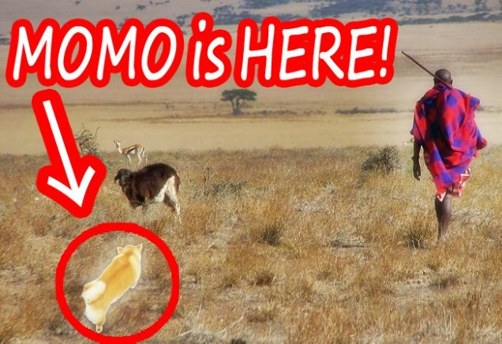

| モモの世界遺産旅行記: 世界編 Vol.051-075 (The BBB: Breakthrough Bandwagon Books) | |
| モモ | |
| The BBB: Breakthrough Bandwagon Books (2016) | |
Momo Meets the World Heritage Sites: On the Globe Vol.051-075 ( Jp )
（邦題『モモの世界遺産旅行記 : 世界編 Vol.051-075 』）
Written by Momo
Translated by Tanya
Cover p hoto by Momo
Cover design by Tanya
C opyright © 2016 Momo / The BBB : Breakthrough Bandwagon Books
All rights reserved.
ISBN: 978-1-365-00110-9
モモの世界遺産旅行記 : 世界編 Vol.051-75
51. ヴェネツィアと、その潟
今日は、イタリア の世界 遺産、
「ヴェネツィアと、その潟」 に 、 やって来ました。
街中 を S 字に流れる 運河 カナル・グランデ を、たくさんのゴンドラが運航しています 。
船頭さんたちが、あちこちで舟歌をクチずさんでいます。
モモが彼らのマネをして「ホー、ホー」と言うと、船頭さんたちが ホメてくれました。
どういうわけか、サンマルコ広場には
仮面をかぶって豪華な服装をした人たちがたくさんいて、モモを取り囲みました。
彼らの雰囲気 にちょっと驚き ましたが、いっしょに 記念撮影しちゃいました。
52. アヤソフィア
今日は、トルコ の世界遺産 、
「アヤ ソフィア 」に 、 やって来ました。
イスタンブールの街は迷路みたいで、モモは迷ってしまいました。
ですが幸運なことに、ここに住むたくさんの猫さんたちが、
アヤ ソフィアという、とても有名な建物への道を教えてくれました。
それは、とても大きくて素晴らしかったので、モモは驚き、強い印象を受けました。
その道すがら、モモはグランドバザールで、
たくさんの豪華な絨毯が売られているのを見ました。
その 絨毯の 上でゴロゴロ転がることを、モモは想像しました。
------ それって、ゼッタイ 気持ち良さそう！
53. スライマン＝ トー
今日は、キルギスの 世界遺産、
「聖山スライマン＝ トー 」に 、 やって来ました。
伝説によると、預言者 の スレイマン さんという人 の指輪をはめると、
あらゆる動物さんたちや植物さんたちと 、 お話できるようになるそうです。
だから、モモはワクワクして、その聖なる山へ向かっているのです。
指輪を見つけられるかな？
モモの冒険は、ますます面白くなってきました。
54. ラホール城
今日は、パキスタンの 世界遺産、
「ラホール城 」に 、 やって来ました。
ここは、とても大きな公園で、おごそかな 要塞が高くそびえています。
要塞の北西にある「夢の王宮」は、美しい鏡の模様で彩られていて、
その素晴らしさにモモは魅了されました。
この「夢の王宮」は、タージ・マハルをつくった王様によって、つくられたそうです。
タージ・マハルを見た時は、ものすごく感動したので、
モモは、その素晴らしさを、はっきりと 、 おぼえています。
今回の経験も忘れられないものとなることを、モモは確信しました。
55. ウマイヤド・モスク
旅の途中で、モモはキャラバンに会い、彼らの夕食に招かれました。
感謝のしるしとして、モモは彼らに、
世界遺産を巡るこれまでの冒険の話を披露しました。
モモの次の目的地がシリアであることを知ると、
現在の状勢ではシリア入国は危険だと、彼らは慌てて警告しました。
モモがとても残念に思っていたので、
キャラバンの家族は、親切にも１枚のポストカードをくれました。
そのカードに写っている建物は、
シリアの首都、ダマスカスにある世界遺産、
ウマイヤド・モスクだということでした。
56. ソコトラ島
今日は、イエメン の世界遺産、
「ソコトラ島 」に 、 やって来ました。
この島のあちこちで、竜血樹という名前の奇妙な樹を見かけました。
その独特の形は、ターニャさんが好きなブロッコリーに、どことなく似ています。
どういうわけか、この島は、気持ちのいい薫りに包まれています。
現地の人によると、 乳香の薫りだそうです。
樹の下で休んでいると、その薫りのおかげで、モモは、とてもリラックスできました。
57. ロス・グラシアレス国立公園
今日は、アルゼンチン の世界遺産、
「ロス・グラシアレス国立公園 」に 、 やって来ました。
モモは、とても寒がりなので、お気に入りの冬用コートを着ています。
ゴゴゴゴゴー !!
突然の轟音に驚いて、モモは周囲を見回しました。
巨大な氷の壁が崩れて、湖へと沈んでいきます。
氷原の雄大さは、モモを絶句させるほどの衝撃でした。
------ ものすごい大自然 !!
58. カナイマ国立公園
今日は、ベネズエラの世界遺産、
「カナイマ国立公園」に、 やって来ました。
テーブルのような形の山 を見上げると、そこから大量の水が流れ落ちていました。
現地の人によると、それは「エンジェル・フォール」という名前で、
滝としては世界一の 979m もの高さにもなるそうです。
6 月から 11 月の雨季、その山 は分厚い雲に覆われて、
まるで浮遊している島のように見えるそうです。
その景色を味わうために、モモは、その山に登ることを決意しました。
59. ラミエール国立歴史公園
今日は、ハイチ の世界 遺産 、
「ラミエール国立歴史公園」に 、 やって来ました。
モモが公園内のサン＝スーシ城へと歩いていると、
19 世紀に ここを 居城としていた国王アンリ Ｉ 世の亡霊が、
夜な夜な 現れるという言い伝えを耳にしました。
モモは怖い話がとっても苦手なので、
ぶるぶると震えて、その宮殿に入るのを、ためらいました。
------ 引き返したほうがいいのかな !?
------ とっても怖い !!
60. スケリッグ・マイケル島
今日は、アイルランド の世界 遺産 、
「 スケリッグ・マイケル島 」 に、やって来ました。
遠い昔、ヨーロッパで最初の修道院が、この島に建てられたそうです。
現地の人によると、この島の名前は現地の言葉で
「大天使ミカエルの岩」という意味なのだそうです。
世界中を旅行しているという、
ニシツノメドリさんたち の 家族が、 親切にも 島内を案内してくれました。
急峻な崖に辿り着くと 、 モモは眼下に広がる大西洋の絶景を、心ゆくまで 楽しみ ました。
61. キンデルダイク
今日は、 オランダ の世界遺産、
「 キンデルダイク 」 に 、 やって来ました。
この国は、絵になる風車がたくさんあることで、世界的に知られています。
まわりにある色とりどりのチューリップを見ながら、
モモは、以前、ターニャさんが歌ってくれた日本の歌を思い出しました。
「♪さ〜い〜た〜、さ〜い〜た〜、チューリップのは〜な〜が♪」
モモはターニャさんのマネをしてクチずさみながら、
風車の羽根を長いあいだ見つめていました。
ついに は、目が回って しまいました。
62. レーティッシュ鉄道
今日は 、スイスとイタリアを結ぶ、
レーティッシュ鉄道に乗車しました。
線路沿いの息を飲む景色は、
スイスとイタリアの世界遺産に登録されています。
可愛らしい赤色の列車 が、急な山道を 昇っていきます。
ラントヴァッサー橋に列車が差し掛かったところで、
乗客たちから大歓声が上がり、モモも楽しげに吠えました。
断崖絶壁の凄い景色は、とてもドキドキするもので、
モモは、すっかり魅了されてしまいました。
63. ルディの測地点
今日は、モルドバ の世界遺産、
「ルディの測地点」に、やってきました。
このオベリスクは、
三角測量のために、 19 世紀にヨーロッパの多くの国に設置された、
シュトルーヴェの測地点のひとつなのだそうです。
そう言えば、地球の外周は約 4 万 km だと、
以前、ターニャさんが教えてくれたことがあります。
------ 何回お散歩に行ったら、 4 万 km になるんだろう？
難しい計算をしようとしたら、
徐々に頭が熱っぽくなって、モモは フラフラになって しまいました。
64. アユタヤ歴史公園
今日は、タイ の世界遺産、
「 アユタヤ歴史公園 」に、 やって来ました。
公園を歩いていると、
仏教寺院遺跡の「ワット・ローカヤスターラーム」 で、
信じられないほど大きな、
寝ている姿の仏像に出くわしました。
それは長さが 57m 、高さ 8m もあるそうなので、
モモの数百倍も大きいことになります。
その仏像は、とても穏やかな顔で微笑んでいます。
その表情はモモを安らかな気持ちにさせて、
となりでお昼寝したい気分になりました。
65. ルアン・パバーンの村
今日はラオス の世界遺産、
「ルアン・パバーン の村 」に 、 やって来ました。
村に到着すると、
モモは民族衣装を着た女の子たちから、あたたかい歓迎を受けました。
現地の人は「モン族」と呼ばれているそうです。モモの名前に似ています。
モモは、その衣装のように綺麗な布を
見たり触ったりするのが大好きだという話をしました。
すると、少女たちは、彼女たちのお母さんやお祖母さんが
つくったのだという刺繍された織物を見せてくれました。
それから、とても可愛い笑みを浮かべながら、
彼らの伝統的な舞踊を披露してくれました。
66. シュンドルボン
今日はバングラデシュ の世界遺産、
「シュンドルボン」に 、 やって来ました。
モモは、マングローブの森で、ベンガルトラの家族に会いました。
ベンガルトラのお母さん がモモに教えてくれたのですが、
この地域の「シュンドルボン」は、
現地のベンガル語で「美しい森」という意味だそうです。
------ 彼らは「シュンドルボン」と言ったかな？
------ それとも......「シャンデルバーン」？
------ シャン？シュン？
混乱のあまり、モモは、それをうまく発音できず、
何度も舌を噛んでしまいました。
------ ああもうっ !!
67. 古都 シーギリヤ

今日は、スリランカ の世界遺産、
「 古都シーギリヤ 」 に 、 やって来ました。
「シーギリヤ 」というのは現地語で、
遺跡の中に立つ巨大な「ライオン岩」に由来するようです。
岩に備えつけられた螺旋階段を上がってモモは空洞部分に入り、
そこの壁に描かれた 18 人の「シーギリヤ ・レディ」を見つけました。
とても美しい女性たちの姿に、モモは感動しました。
スリランカの女性の美の秘訣は、
伝統的医学のアーユルヴェーダにあるそうです。
その有益な情報を聞いて、
モモは美女犬になるために、ヨガとセイロン茶を試したくなりました。
68. 東 レンネル
今日は、ソロモン諸島 の南端、レンネル島に、やって来ました。
この島の東半分、「東レンネル」は、世界遺産に登録されています。
島内のテガノ湖で、モモは 100 人くらいの現地人に会いました。
驚いたことに彼らの半分はティーン・エイジャーで、
彼らは親しげに島内を案内してくれました。
テガノ湖は、彼らによると、太平洋で最大の湖なのだそうです。
大海原の中の孤島にこんなにも大きな湖があることに、モモは驚かされました。
カヌーに揺られながら、モモは、湖に肉球を浸してみました。
冷たいけれど澄んでいて、モモは気持ち良くなりました。
69. ビキニ島
今日は、マーシャル諸島 で唯一の世界遺産、
「 ビキニ島 （ビキニ環礁） 」に、 やって来ました。
美しい海に囲まれた、小さな島です。
ですが、モモが聞いたところによると、
この島では、悪夢のような実験が、何度も行われていたそうです。
資料映像を観ているうちに、いつの間にか 悲しみの 涙があふれました。
70. ケニア山国立公園
今日は、ケニア の世界遺産、
「ケニア山国立公園」に 、 やって来ました。
アフリカ大陸で ２番目に高い、ケニア山が向こうに聳えています。
その巨大な峰をモモが見上げていると、
ゾウの男の子に親しげに話しかけられました。
モモからすると、彼は、山と同じくらい巨大であるように感じられます。
ゾウの男の子といっしょに、モモは、しばらく鬼ごっこをして遊びました。
「からだは小さくても、足の速さでは負けないんだから！」
71. レアル・デ・サン・フィリペ要塞
今日は、 サンティアゴ島の
「レアル・デ・サン・フィリペ要塞」に、やって来ました。
それは、カーボ・ヴェルデ共和国で唯一の世界遺産です。
この砦は、「大航海時代」のまっただ中の 1590 年に建てられたようです。
大西洋を見下ろす、海抜 120m の崖の上にあります。
ポルトガル語の「カーボ・ヴェルデ」は、「緑の岬」という意味だと聞きました。
名前の通り、このあたりでは緑の植物が見かけます。
岬に立っていると、海からの潮風が心地良かったです。
72. マラケシュ旧市街

今日は、モロッコ の世界遺産、
「 マラケシュ旧市街 」に、 やって来ました。
この古い都市は海抜 450 m のところにあり、 20km もある壁に囲まれています。
壁は、この都市を護るためにつくられたもののようです。
お散歩を楽しみながら、モモは、
ジャマ・エル・フナ広場という名前の、大きくて賑やかな市場を見つけました。
広場内では、大道芸人たち のまわりに、たくさんの観客が集まっていました。
モモもその輪に加わって、しばらくショウを見物しました。
屋台から漂う良い匂いに誘われて、モモは今夜のごはんを探し始めました。
73. ンゴロンゴロ自然保護区
今日は、タンザニアの 世界遺産、
「ンゴロンゴロ自然保護区」に 、 やって来ました。
ナイヨビという村につくと、マサイ族の人たちが
彼らの崇拝するオル・ドインヨ・レンガイ山まで案内してくれました。
標高 2,880m の高みから、ナトロン湖やセレンゲティ国立公園のような
自然保護区の美しい風景を眺めることができました。
黒サイさん、シマウマさん、ヌーさん、キリンさんたちの大家族が、
米粒のように小さく見えていました。

74. ルクセンブルク市
今日は、ルクセンブルク 市に、やって来ました。
この旧市街と 要塞は、世界遺産に登録されています。
丘にあるとても綺麗な歴史的な建物 群 が、市の中心部を見下ろしています。
おもちゃのような電車が 、背の高い 石橋の 上を走っています。
お散歩しながら、モモは遠くのほうに
巨大な観覧車と、かっこいいデザインの近代的なビルを見つけました。
この街には、人々を楽しませるものが、たくさんあるようです。
「このワクワクする街で、いろんなことをしてみたい！」
75. リガ の歴史地区
今日は、バルト３国 で最大の都市、リガに、やって来ました。
リガの歴史地区は、ラトヴィアの世界遺産として登録されているそうです。
この旧市街には、立派な外観の歴史的な建物が、たくさんあり ます。
石畳の道の途中で、 気まぐれで、一軒の綺麗な家に入りました。
中には螺旋階段があって、モモは、昇りたくなってきました。
階段から天井までを見上げると、
不思議な絵が 、 そこに描かれているのがわかりました。
次第に、天井がグルグルし始めた ように感じられてきました......
「うーん......世界が回っている？」
モモからの年賀状 2016
今日は、結婚前の女の子が着る日本の伝統的な着物「振り袖」を、
ターニャさんがモモに着せてくれました。
モモの好きな色である、ピーチ色の着物です。
見た目がかわいいだけでなく、
ピーチは日本語で「モモ」と言うので、モモは、その色が大好きです。
たくさんの国の世界遺産を旅しながら、
モモは、素晴らしいお友達との出逢いを、いっぱい経験しました。
そのひとつひとつが、彼女の人生（犬生？）の宝物です。
モモは夜空を見上げて、お祈りしました。
「地球上のお友達みんなが、 2016 年、最高にハッピーでありますように !! 」
心からの感謝を込めて。
（次巻に続く）
本書 は The BBB: Breakthrough Bandwagon Books のためにつくられたオリジナル作品です。